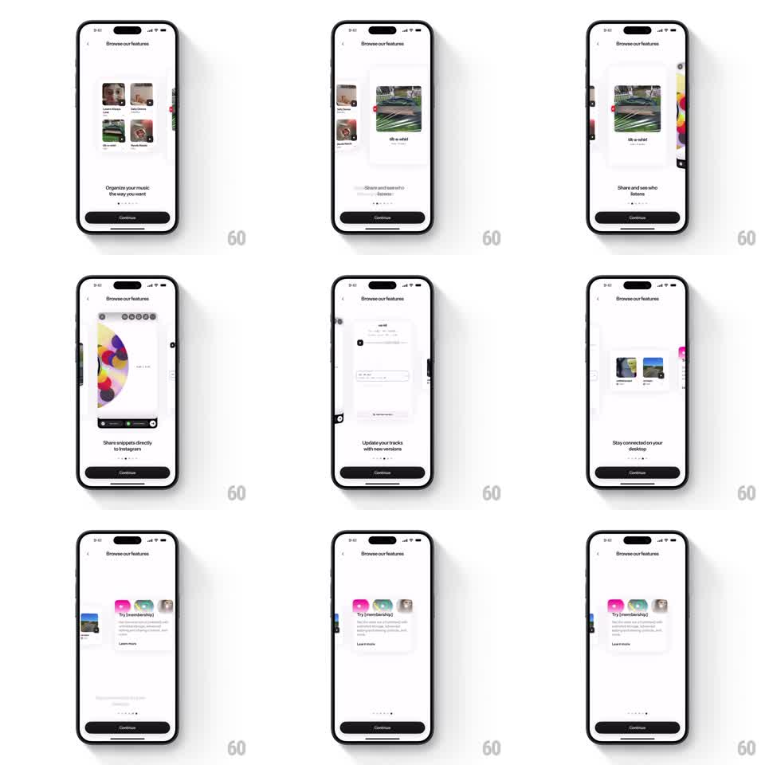

Media
Frame-by-frame

Rebuild this interaction 1:1: an onboarding feature carousel where horizontal swipes rotate cards in 3D perspective - the center card faces forward at full scale while neighbors tilt away and shrink, captions crossfade below.

Rebuild this interaction 1:1: an onboarding feature carousel where horizontal swipes rotate cards in 3D perspective - the center card faces forward at full scale while neighbors tilt away and shrink, captions crossfade below.
## Integration
Integration: stack-agnostic spec - springs given as stiffness/damping, timed motions as duration + curve; map every value to your framework and animation library of choice.
## Scene
"Browse our features" onboarding: a horizontal stack of rounded feature cards (screenshot + title) center stage, caption + subcopy beneath ("Organize your music the way you want", "Share snippets directly to Instagram", "Update your tracks with new versions", ...), page dots, and a dark Continue button.
## Motion spec
Pattern: 3D cover-flow carousel.
- Drag/swipe: cards translate horizontally tracking the finger 1:1 while each card's rotateY interpolates by distance from center (0deg center, ~55deg at one card-width offset) and scale drops to ~0.8; perspective ~1000px.
- Release: snap to nearest card (spring ~260/26, ~350ms); the incoming card un-rotates to flat and scales to 1 through the same spring.
- Caption text: outgoing caption fades + slides ~16px along the swipe (~200ms), incoming fades in trailing by ~80ms; page dot advances.
- Continue button and header stay fixed.
## Calibration
- Rotation and scale are continuous functions of offset - never stepped - so mid-drag reads as a physical fan of cards.
- Only two neighbors are visible; further cards cull to avoid depth noise.
## Reduced motion
Cards slide flat without rotateY; captions crossfade.
## Don't miss
- The center card is always perfectly flat - any residual tilt at rest is a bug.
- Side cards tilt their inner edge away (rotateY sign follows side).